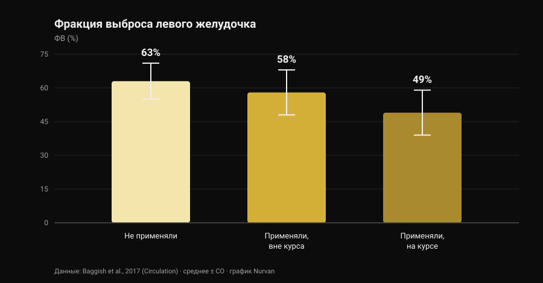
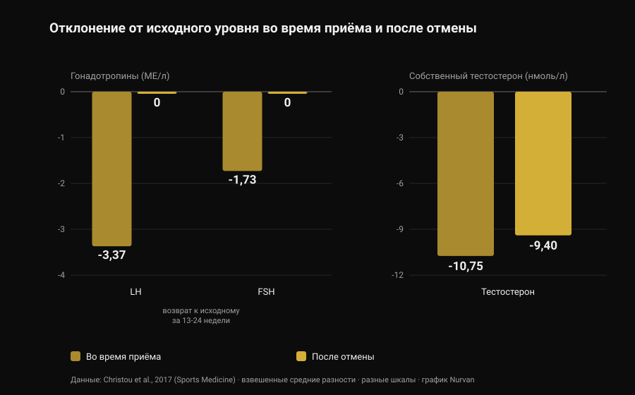

Анаболические стероиды: побочные эффекты и риски
В моей ленте попался пост с верной и непопулярной мыслью: анаболические стероиды работают, но выбрать только те эффекты, которые хочется, нельзя. Это правда, и научная литература оценивает это гораздо точнее, чем любая карточка в карусели. Я прочитал восемь индексированных работ, чтобы понять, сколько стоит такой «полный пакет», — и больше всего меня удивила не цифра про сердце, а то, сколько времени требуется, чтобы вернуться к норме.

Коротко
- То, что они работают, не обсуждается. Десять недель тестостерона в сверхфизиологических дозах плюс тренировки: +6,1 кг сухой массы, +22 кг в жиме лёжа, +38 кг в приседе. Мышцы росли даже у тех, кто не тренировался (Bhasin et al., 1996).
- Андрогеновый рецептор есть не только в мышцах. По датским регистрам, акне, гинекомастия и эректильная дисфункция встречаются каждая более чем у 10% потребителей (Horwitz et al., 2019).
- По сердцу данные самые надёжные. Фракция выброса левого желудочка 52% у потребителей против 63% у не применявших; 49% у тех, кто на момент обследования был «на курсе» (Baggish et al., 2017).
- Возврат назад идёт медленнее, чем принято рассказывать. После отмены ЛГ и ФСГ возвращаются к исходному уровню за 13-24 недели, но собственный тестостерон через 16 недель был всё ещё на 9,4 нмоль/л ниже исходного (метаанализ 33 исследований, Christou et al., 2017).
- У части людей он не возвращается полностью. Из 19 бывших потребителей без лечения у 5 тестостерон был ниже 200 нг/дл спустя 3-26 месяцев воздержания; у 7 из 24 во время отмены развился большой депрессивный эпизод (Kanayama et al., 2015).
«Работают ли они» — не самый интересный вопрос
Эта часть закрыта тридцать лет назад. В 1996 году сорок три мужчины были случайно распределены на четыре группы: плацебо или тестостерон, с тренировками или без. Те, кто получал сверхфизиологические дозы тестостерона и тренировался, набрали 6,1 кг сухой массы за десять недель; площадь поперечного сечения трицепса выросла на 501 мм², квадрицепса — на 1174 мм²; жим лёжа +22 кг, присед +38 кг.
Самая поучительная деталь другая: росли и те, кто не тренировался. В группе «тестостерон без тренировок» площадь трицепса увеличилась на 424 мм², а в группе «плацебо без тренировок» уменьшилась на 81 мм². Препарат действует независимо от стимула, и это объясняет масштаб явления: оценочная распространённость в течение жизни — около 6,4% у мужчин и 1,6% у женщин (Nieschlag и Vorona, 2015).
Ради честности: в том исследовании настроение и поведение не изменились ни в одной из групп. Но десять недель под медицинским наблюдением — это не десять лет самостоятельных курсов, и именно об этой разнице весь дальнейший текст.
Почему нельзя выбрать только нужные эффекты
Андрогеновый рецептор один, и это не рецептор мышцы. Он представлен в миокарде, печени, коже, волосяном фолликуле, простате, кости, гортани и головном мозге. Когда уровень андрогенов в крови поднимается намного выше нормы, он поднимается сразу для всех этих тканей.
«Анаболико-андрогенное соотношение» из таблиц, которые ходят по интернету, выведено на грызунах и не превращается у человека в чистую тканевую избирательность. Эмпирическая проверка — в регистрах: в датской когорте Horwitz акне, гинекомастия (рост грудной железы у мужчин) и эректильная дисфункция встречались каждая более чем у 10% потребителей. Ни один из трёх эффектов никто не ищет.
У женщин некоторые пункты не стираются: акне и гирсутизм встречаются часто, а огрубение голоса необратимо (Nieschlag и Vorona, 2015). Самый свежий обзор формулирует прямо: большинство нежелательных эффектов лёгкие и обратимые, но некоторые способны вызвать стойкое повреждение или угрожать жизни (Linhares et al., 2022).
Поэтому полезный вопрос не «какие эффекты я хочу», а какие эффекты я готов не иметь возможности выбирать. Про андрогены и волосы мы разбирали механизм ДГТ отдельно — в материале вызывает ли креатин выпадение волос.
Сердце: здесь данные самые сильные
Самое информативное исследование — поперечное: 140 спортсменов силовых видов в возрасте от 34 до 54 лет (86 с суммарным стажем приёма не менее двух лет и 54 не применявших), обследованных с помощью эхокардиографии и КТ-ангиографии коронарных артерий.

Фракция выброса — доля крови, которую левый желудочек выбрасывает за одно сокращение, — составила в среднем 52% у потребителей против 63% у не применявших. Диастолическая функция, то есть способность желудочка расслабляться и наполняться, тоже была снижена (скорость раннего расслабления 9,3 против 11,1 см/с). Авторы называют это своим именем: дисфункция миокарда.
Внутри группы потребителей есть цифра, которую стоит запомнить: у тех, кто на момент обследования был на курсе, фракция выброса составляла 49%, у отменивших — 58%. То есть насосная функция хотя бы частично восстанавливается после прекращения.
Коронарные артерии — нет. Медианный объём бляшек составил 3 мл у потребителей против 0 мл у не применявших, и он рос вместе с суммарной длительностью приёма: каждые десять лет совокупного стажа соответствовали увеличению атеросклеротической нагрузки на 0,60 стандартного отклонения. Именно это различие почти никогда не делают короткие пересказы в соцсетях: сократимость приходит и уходит, а бляшка — это отложение, и отложения не рассасываются к концу курса.
По клиническим событиям: датский регистр из 1189 потребителей, прослеженных около одиннадцати лет, против 59 450 контролей даёт инфаркт миокарда со скорректированным отношением рисков 3,00 и кардиомиопатию 8,90 (Windfeld-Mathiasen et al., 2025). Подробно об этом, вместе с тем, что происходит с липидами, мы писали в материале тестостерон и холестерин.
Сколько на самом деле занимает возвращение
Здесь спортзальная «просвещённость» ошибается чаще всего, и здесь же данные самые надёжные: метаанализ 33 исследований и 3879 участников, из них 1766 потребителей.

Во время приёма ось, управляющая собственной выработкой тестостерона, выключается: ЛГ −3,37 МЕ/л, ФСГ −1,73 МЕ/л, собственный тестостерон −10,75 нмоль/л относительно исходного. Это предсказуемо: мозг видит избыток андрогенов и перестаёт их запрашивать.
Важно то, что происходит потом. Гонадотропины — гормоны, которыми гипофиз отдаёт команду яичкам, — возвращаются к исходным значениям за 13-24 недели. Тестостерон — нет: через 16 недель после отмены он был всё ещё на 9,4 нмоль/л ниже исходного уровня. Команда уходит раньше, чем завод возобновляет производство.
У тех, кто бросил давно, данные ещё прямее. Девятнадцать бывших длительных потребителей без лечения по сравнению с 36 спортсменами, никогда ничего не принимавшими, имели тестостерон на 131 нг/дл ниже, объём яичек на 2,3 мл меньше и половое влечение на 2,4 балла ниже по десятибалльной шкале; пятеро были ниже 200 нг/дл после воздержания длительностью от 3 до 26 месяцев. И вот часть, которая почти никогда не попадает в карусели: из 24 бывших потребителей в этом исследовании у 7 (29%) во время отмены развился большой депрессивный эпизод, причём у четверых такого не было ни в какой другой период жизни, а двое не вернули ни либидо, ни эректильную функцию даже на адекватной заместительной терапии (Kanayama et al., 2015).
С фертильностью картина согласуется: изменения количества, формы и подвижности сперматозоидов, уменьшение объёма яичек, а у женщин — клиторомегалия, нарушения цикла и снижение фертильности (Christou et al., 2017). Подавление сперматогенеза описывают как обратимое, с важной оговоркой: если он не восстанавливается, возможно, проявилось нарушение фертильности, существовавшее и раньше (Nieschlag и Vorona, 2015).
Смертность и госпитализации: что показывают регистры
На длинной дистанции есть только популяционные данные, потому что контролируемый эксперимент с такими дозами не пропустил бы ни один этический комитет.
В датской когорте 545 мужчин с положительным допинг-тестом в фитнес-клубах сравнили с 5450 подобранными контролями: смертность втрое выше (отношение рисков 3,0; 95% ДИ 1,3-7,0) и медиана 0,81 обращения в больницу в год против 0,36. Результат воспроизвели во второй когорте из 644 мужчин, отказавшихся от теста (Horwitz et al., 2019).
Одно предупреждение, иначе цифра превращается в лозунг: это наблюдательные исследования, и те, кто принимает стероиды, отличаются от контролей ещё и другими веществами, другими привычками и другим отношением к риску. «Втрое» — не изолированный вклад препарата, но это самое близкое к реальному балансу, что у нас есть.
Что на самом деле говорит наука
«Анаболические стероиды работают» Рандомизированное исследование: +6,1 кг сухой массы за десять недель с тренировками и рост мышц даже без них.
«Нельзя воздействовать только на мышцу: анаболическое и андрогенное не разделяются» Один рецептор во множестве тканей, а в регистрах акне, гинекомастия и эректильная дисфункция — каждая выше 10%. У женщин огрубение голоса необратимо.
«Риск не бинарный: он зависит от дозы, длительности, препарата и индивидуальной реакции» Доза и длительность действительно важны, это задокументировано. Но индивидуальная реакция — как раз та переменная, которую нельзя узнать заранее: это риск, а не настройка.
«Больше фармакологии «Управлять» предполагает, что всё значимое измеримо и поправимо. Самый сильный сигнал регистров — кардиомиопатия, а показатель, растущий вместе с экспозицией, — отложение в коронарных артериях: ни то, ни другое не исправляется анализом крови.
«После курса всё вернётся как было» Тестостерон через 16 недель всё ещё на 9,4 нмоль/л ниже исходного; пятеро из 19 бывших потребителей ниже 200 нг/дл спустя месяцы; двое из 24 без восстановления половой функции даже на терапии.
«Если ты молод, здоров и сдаёшь анализы, ничем не рискуешь» Датские когорты как раз и состоят из посетителей фитнес-клубов: тройная смертность, более чем вдвое больше госпитализаций, риск кардиомиопатии почти в девять раз выше.
«Контролируемый приём убирает риск» Рандомизированных исследований с такими дозами нет и не будет. Кто утверждает обратное, выдаёт отсутствие данных за доказательство безопасности.
Как это применить
- Если вы только рассматриваете приём, смените вопрос. Не «сколько нужно, чтобы вырасти», а «какие эффекты я готов не иметь возможности выбирать»: гинекомастию, акне, эректильную дисфункцию и коронарную бляшку нельзя отключить.
- Если принимаете или принимали — скажите врачу. Это та информация, которая меняет трактовку любого анализа, а многие врачи сами не спрашивают: сообщить придётся вам.
- Знайте симптомы отмены. Падение влечения, проблемы с эрекцией и подавленное настроение после отмены — не слабость характера: в исследовании Kanayama у 29% в этот период был большой депрессивный эпизод. Это медицинское состояние, и оно лечится.
- Если планируете детей, обсудите это заранее. Сперматогенез подавляется во время приёма и восстанавливается долго и по-разному: предварительная консультация андролога стоит больше любого протокола с форума.
- Не путайте назначенную терапию с приёмом «для зала» и смотрите на динамику, а не на один анализ. Давление, общий анализ крови, липиды и состав тела говорят о чём-то на горизонте лет, а не недели. Сравнение — в материале тестостерон и холестерин.
Попробуйте Nurvan — анализы, замеры и нагрузки на одной шкале времени
Когда следишь за своим здоровьем годами, практическая проблема в том, что результаты расползаются по почте, папкам и PDF. В Nurvan вы загружаете анализы крови и видите динамику каждого показателя на шкале времени, а рядом в тех же месяцах — рабочие веса, RIR и замеры тела: к врачу вы приносите всю серию, а не последний лист.
Частые вопросы
Какие побочные эффекты анаболических стероидов встречаются чаще всего?
В популяционных регистрах это акне, гинекомастия и эректильная дисфункция — каждая более чем у 10% потребителей. К ним добавляются атрофия яичек, подавление собственной выработки тестостерона, а со стороны сердца — снижение насосной функции и накопление коронарных бляшек.
Сколько времени занимает восстановление после отмены?
В метаанализе 33 исследований гонадотропины возвращаются к исходным значениям за 13-24 недели, но собственный тестостерон через 16 недель был всё ещё на 9,4 нмоль/л ниже исходного. У части бывших потребителей значения остаются низкими месяцами: пятеро из девятнадцати были ниже 200 нг/дл спустя 3-26 месяцев воздержания.
Повреждают ли стероиды сердце необратимо?
Это две разные вещи. Сократительная функция, по-видимому, хотя бы частично восстанавливается: среди потребителей у отменивших фракция выброса составляла 58% против 49% у находившихся на курсе. А коронарная бляшка растёт вместе с суммарным стажем приёма, и это не показатель, который обнуляется после отмены.
Существует ли безопасный анаболический стероид?
Нет, и ни одно рандомизированное исследование с такими дозами этого не покажет: этические ограничения не позволяют подвергать добровольцев потенциально токсичным схемам. Различия между препаратами реальны — например, пероральный путь бьёт по липидам намного сильнее инъекционного, — но это различия в масштабе вреда, а не в его наличии.
Читайте также
- Тестостерон и холестерин: что говорят исследования — цифры по ЛПВП, ЛПНП и апоB и разница между терапией и курсом.
- Креатин вызывает выпадение волос? — механизм ДГТ подробно и с проверкой по исследованиям.
- Тир-лист добавок для силы — у чего действительно есть доказательства, по порядку и без фармакологии.
Источники
- Bhasin S, Storer TW, Berman N, Callegari C, Clevenger B, Phillips J, Bunnell TJ, Tricker R, Shirazi A, Casaburi R, 1996. The effects of supraphysiologic doses of testosterone on muscle size and strength in normal men. New England Journal of Medicine 335(1):1-7. PMID 8637535 · DOI 10.1056/NEJM199607043350101
- Baggish AL, Weiner RB, Kanayama G, Hudson JI, Lu MT, Hoffmann U, Pope HG, 2017. Cardiovascular Toxicity of Illicit Anabolic-Androgenic Steroid Use. Circulation 135(21):1991-2002. PMID 28533317 · DOI 10.1161/CIRCULATIONAHA.116.026945
- Christou MA, Christou PA, Markozannes G, Tsatsoulis A, Mastorakos G, Tigas S, 2017. Effects of Anabolic Androgenic Steroids on the Reproductive System of Athletes and Recreational Users: A Systematic Review and Meta-Analysis. Sports Medicine 47(9):1869-1883. PMID 28258581 · DOI 10.1007/s40279-017-0709-z
- Kanayama G, Hudson JI, DeLuca J, Isaacs S, Baggish A, Weiner R, Bhasin S, Pope HG, 2015. Prolonged hypogonadism in males following withdrawal from anabolic-androgenic steroids: an under-recognized problem. Addiction 110(5):823-31. PMID 25598171 · DOI 10.1111/add.12850
- Horwitz H, Andersen JT, Dalhoff KP, 2019. Health consequences of androgenic anabolic steroid use. Journal of Internal Medicine 285(3):333-340. PMID 30460728 · DOI 10.1111/joim.12850
- Nieschlag E, Vorona E, 2015. MECHANISMS IN ENDOCRINOLOGY: Medical consequences of doping with anabolic androgenic steroids: effects on reproductive functions. European Journal of Endocrinology 173(2):R47-58. PMID 25805894 · DOI 10.1530/EJE-15-0080
- Linhares BL, Miranda EP, Cintra AR, Reges R, Torres LO, 2022. Use, Misuse and Abuse of Testosterone and Other Androgens. Sexual Medicine Reviews 10(4):583-595. PMID 34887237 · DOI 10.1016/j.sxmr.2021.10.002
- Windfeld-Mathiasen J, Heerfordt IM, Dalhoff KP, Andersen JT, Andersen MA, Johansson KS, Biering-Sørensen T, Olsen FJ, Horwitz H, 2025. Cardiovascular Disease in Anabolic Androgenic Steroid Users. Circulation 151(12):828-834. PMID 39945117 · DOI 10.1161/CIRCULATIONAHA.124.071117
Библиография получена через PubMed. Отправная точка: пост built4mayhem (Project Mayhem) от 25 сентября 2026 года, оригинальная публикация. Были прочитаны только автор, дата и подпись: ни текст, ни изображения не воспроизводились, слайды карусели не скачивались и не просматривались. Тема написана с нуля — с возвращением к первичным исследованиям и проверкой каждого из них.
Giammaria Loi — основатель Nurvan. Занимается с отягощениями с 2012 года, работает персональным тренером и коучем с сертификацией FIPE с 2013 года и выступает в пауэрлифтинге на национальном уровне с 2018 года. Каждая его статья начинается с научных исследований и заканчивается тем, что действительно работает в зале.
Примечание: информационный материал, не заменяющий консультацию врача. Статья описывает риски, задокументированные в литературе, и не содержит дозировок, названий препаратов и схем приёма: она никоим образом не поощряет употребление этих веществ. Немедицинское применение анаболических стероидов запрещено в спорте и во многих странах незаконно. Если вы принимаете или принимали эти вещества либо рассматриваете гормональную терапию, обсудите это с врачом.